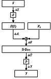
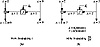
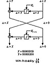

| Previous | Table of Contents | Next |
Various oddities about the S-boxes appeared in the literature. The last three output bits of the fourth S-box can be derived in the same way as the first by complementing some of the input bits [436,438]. Two different, but carefully chosen, inputs to S-boxes can produce the same output [436]. It is possible to obtain the same output of a single DES round by changing bits in only three neighboring S-boxes [487]. Shamir noticed that the S-boxes entries appeared to be somewhat imbalanced, but wasn’t about to turn that imbalance into an attack [1423]. (He mentioned a feature of the fifth S-box, but it took another eight years before linear cryptanalysis exploited that feature.) Other researchers showed that publicly known design principles could be used to generate S-boxes with the observed characteristics [266].
Additional Results
There were other attempts to cryptanalyze DES. One cryptographer looked at nonrandomness based on spectral tests [559]. Others analyzed sequences of linear factors, but their attack failed after eight rounds [1297,336,531]. A 1987 unpublished attack by Donald Davies exploited the way the expansion permutation repeats bits into adjacent S-boxes; this attack is also impractical after eight rounds [172,429].
Differential Cryptanalysis
In 1990, Eli Biham and Adi Shamir introduced differential cryptanalysis [167,168,171,172]. This is a new method of cryptanalysis, heretofore unknown to the public. Using this method, Biham and Shamir found a chosen-plaintext attack against DES that was more efficient than brute force.
Differential cryptanalysis looks specifically at ciphertext pairs: pairs of ciphertexts whose plaintexts have particular differences. It analyzes the evolution of these differences as the plaintexts propagate through the rounds of DES when they are encrypted with the same key.
Simply, choose pairs of plaintexts with a fixed difference. The two plaintexts can be chosen at random, as long as they satisfy particular difference conditions; the cryptanalyst does not even have to know their values. (For DES, the term “difference” is defined using XOR. This can be different for different algorithms.) Then, using the differences in the resulting ciphertexts, assign different probabilities to different keys. As you analyze more and more ciphertext pairs, one key will emerge as the most probable. This is the correct key.
The details are more complicated. Figure 12.5 is the DES round function. Imagine a pair of inputs, X and X’, that have the difference DX. The outputs, Y and Y’ are known, and therefore so is the difference, Y. Both the expansion permutation and the P-box are known, so ΔA and ΔC are known. B and B’ are not known, but their difference ΔB is known and equal to ΔA. (When looking at the difference, the XORing of Ki with A and A’ cancels out.) So far, so good. Here’s the trick: For any given ΔA, not all values of ΔC are equally likely. The combination of ΔA and ΔC suggests values for bits of A XOR Ki and A’ XOR Ki. Since A and A’ are known, this gives us information about Ki.
Look at the last round of DES. (Differential cryptanalysis ignores the initial and final permutation. They have no effect on the attack, except to make it harder to explain.) If we can identify K16 then we have 48 bits of the key. (Remember, the subkey in each round consists of 48 bits of the 56-bit key.) The other 8 bits we can get by brute force. Differential cryptanalysis will get us K16.
Certain differences in plaintext pairs have a high probability of causing certain differences in the resulting ciphertext pairs. These are called characteristics. Characteristics extend over a number of rounds and essentially define a path through these rounds. There is an input difference, a difference at each round, and an output difference—with a specific probability.
You can find these characteristics by generating a table where the rows represent the possible input XORs (the XOR of two different sets of input bits), the columns represent the possible output XORs, and the entries represent the number of times a particular output XOR occurs for a given input XOR. You can generate such a table for each of DES’s eight S-boxes.

Figure 12.5 DES round function.
For example, Figure 12.6a is a one-round characteristic. They input difference of the left side is L; it could be anything. The input difference of the right side is 0. (The two inputs have the same right-hand side, so their difference is 0.) Since there is no difference going in to the round function, then there is no difference coming out of the round function. Therefore, the output difference of the left side is L ⊕ 0 = L, and the output difference of the right side is 0. This is a trivial characteristic, and is true with probability 1.
Figure 12.6b is a less obvious characteristic. Again, the input difference to the left side is arbitrary: L. The input difference to the right side is 0x60000000; the two inputs differ in only the second and third bits. With a probability of 14/64, the output difference of the round function is L ⊕ 0x00808200. This means that the output difference of the left side is L ⊕ 0x00808200 and the output difference of the right side is 0x60000000—with probability 14/64.
Different characteristics can be joined. And, assuming the rounds are independent, the probabilities can be multiplied. Figure 12.7 joins the two characteristics previously described. The input difference to the left side is 0x00808200 and the input difference to the right side is 0x60000000. At the end of the first round the input difference and the output of the round function cancel out, leaving an output difference of 0. This feeds into the second round; the final output difference of the left side is 0x60000000 and the final output difference of the right side is 0. This two-round characteristic has a probability of 14/64.
A plaintext pair that satisfies the characteristic is a right pair. A plaintext pair which does not is a wrong pair. A right pair will suggest the correct round key (for the last round of the characteristic); a wrong pair will suggest a random round key.

Figure 12.6 DES characteristics.

Figure 12.7 A two-round DES characteristic.
To find the correct round key, simply collect enough guesses so that one subkey is suggested more often than all the others. In effect, the correct subkey will rise out of all the random alternatives.
So, the basic differential attack on n-round DES will recover the 48-bit subkey used in round n, and the remaining 8 key bits are obtained by brute-force guessing.
There are still considerable problems. First, there is a negligible chance of success until you reach some threshold. That is, until you accumulate sufficient data you can’t tell the correct subkey from all the noise. And the attack isn’t practical: You have to use counters to assign different probabilities to 248 possible subkeys, and too much data is required to make this work.
At this point, Biham and Shamir tweaked their attack. Instead of a using a 15-round characteristic on 16-round DES, they used a 13-round characteristic and some tricks to get the last few rounds. A shorter characteristic with a higher probability worked better. And they used some clever mathematics to obtain 56-bit key candidates which could be tested immediately, eliminating the need for counters. This attack succeeds as soon as a right pair is found; this avoids the threshold and gives a linear success probability. If you have 1000 times fewer pairs, then you have 1000 times smaller chance of success. This sounds terrible, but it is a lot better than the threshold. There is always some chance of immediate success.
| Previous | Table of Contents | Next |
){kind=link}
){kind=link}
){kind=link}
){kind=link}
){kind=link}
){kind=link}